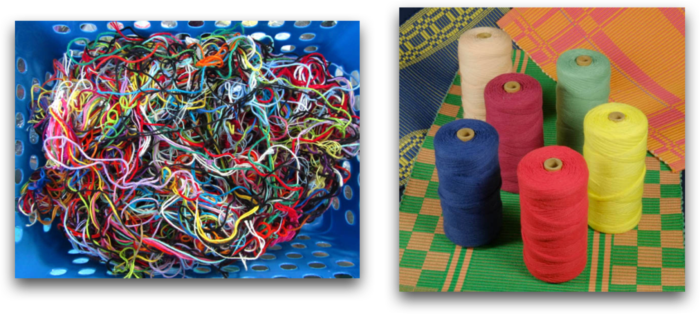
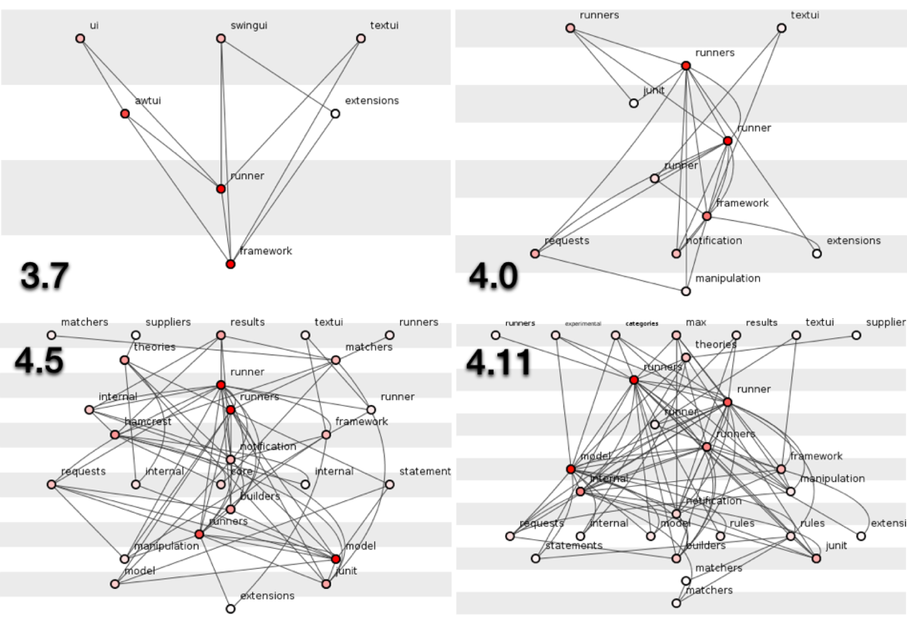
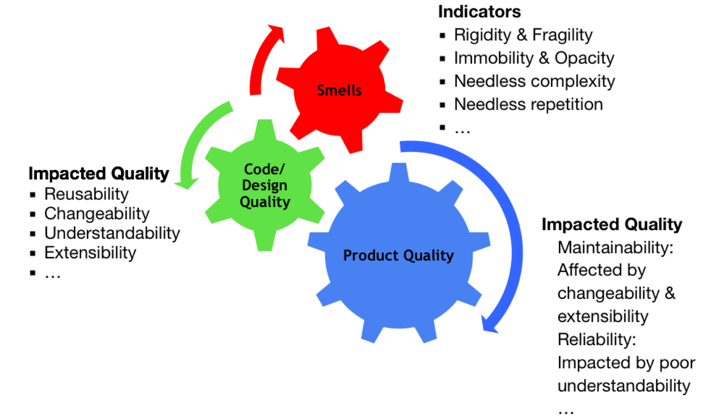
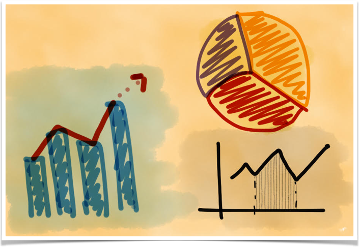
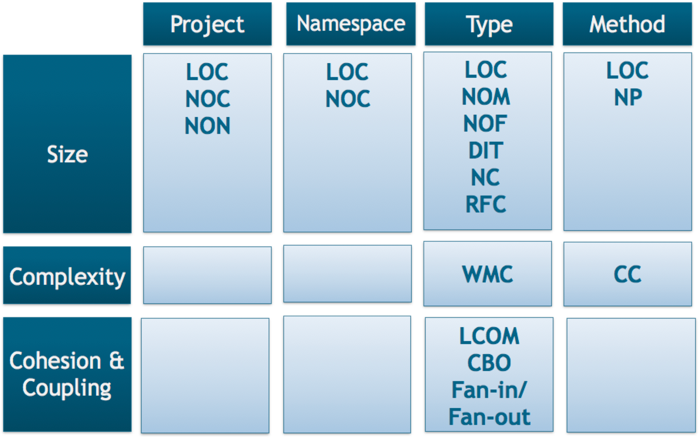
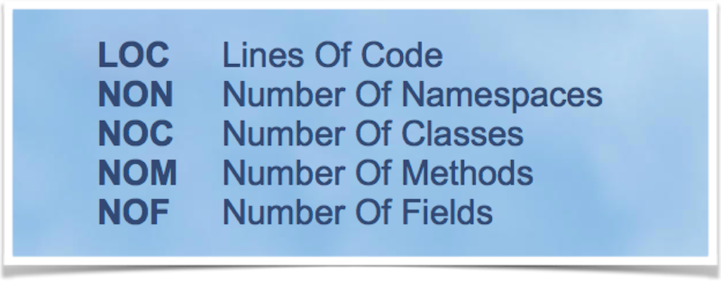
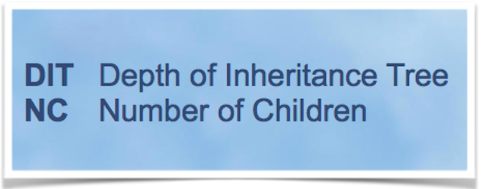
Consider a class C with n methods M1, M2..., Mn.
Let {Ij} = set of instance variables used by method Mj. There are n such sets I1 ,…, In
P = {(Ii, Ij) | (Ii ∩ Ij ) = ∅}
Q = {(Ii, Ij) | (Ii ∩ Ij ) ≠ ∅}
LCOM = (||P| - |Q||)/|P|, if |P| > 0
= 0, otherwise
High LCOM indicate the violation of the Single Responsibility Principle.
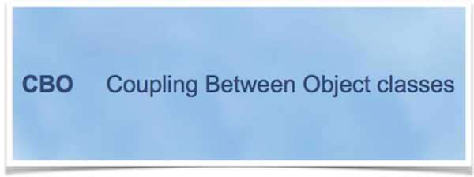
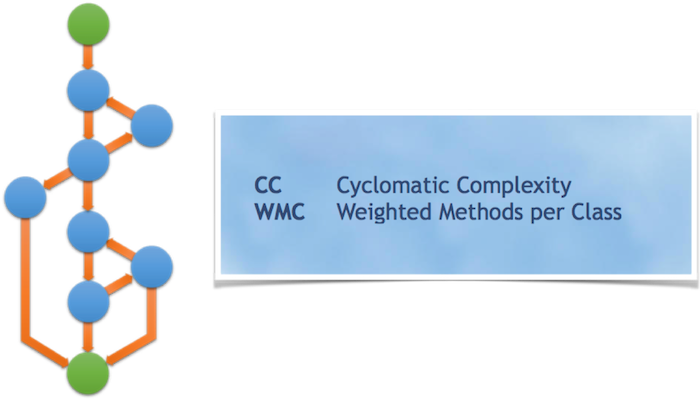
Jarchitect (http://www.jarchitect.com/)
NDepend (http://www.ndepend.com/)
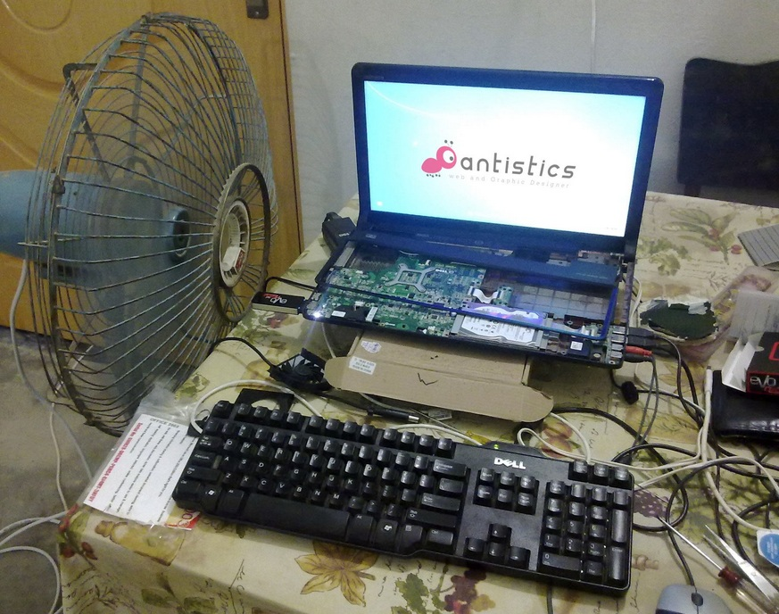
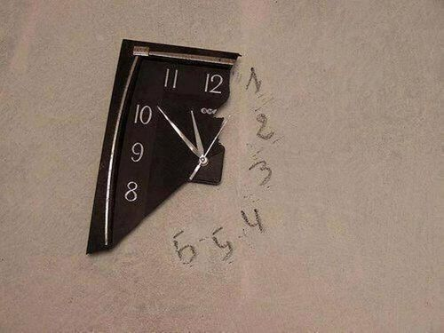
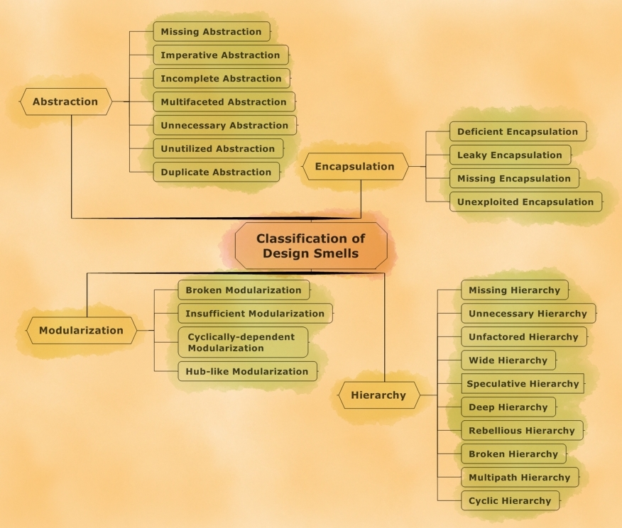
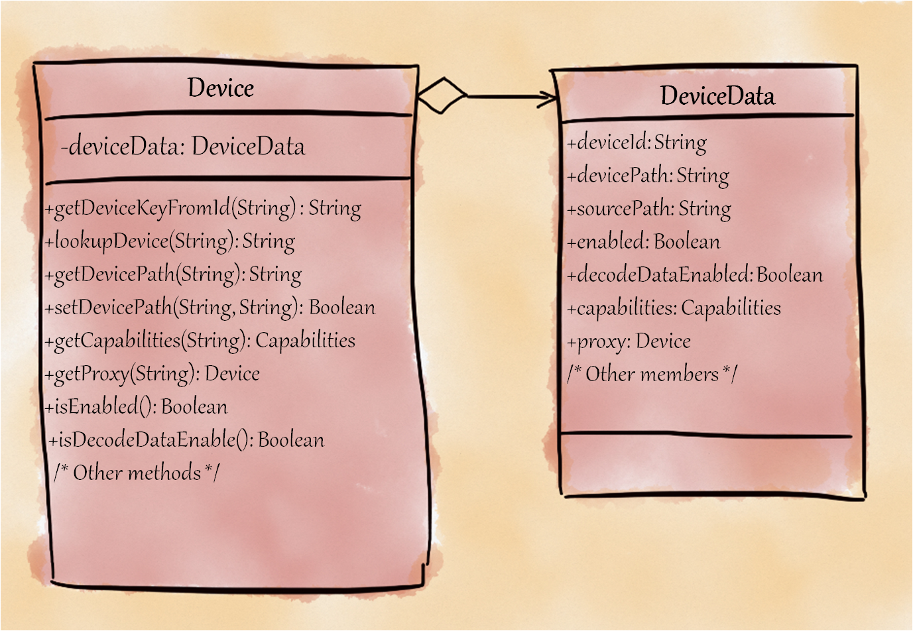
This smell arises when members of an abstraction are broken and spread across multiple abstractions (when ideally they should have been localized into a single abstraction).
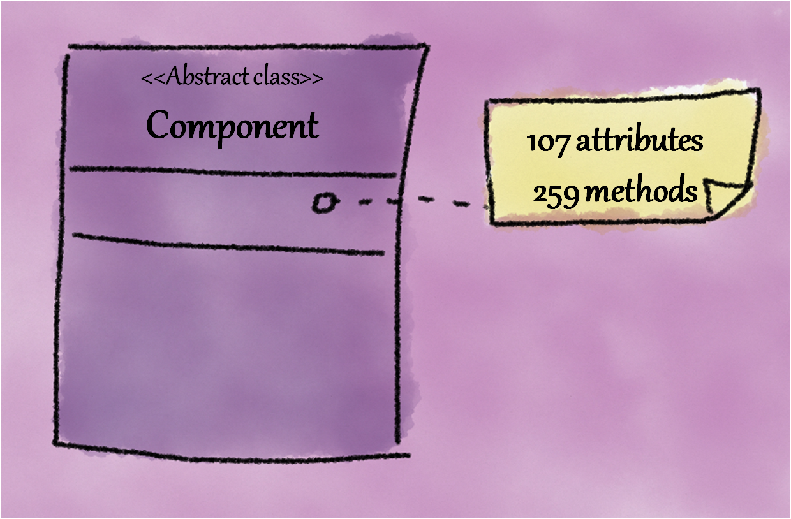
This smell arises when an abstraction exists that has not been completely decomposed and a further decomposition could reduce its size, implementation complexity, or both.
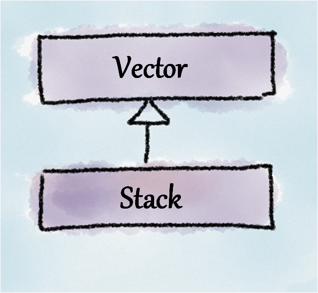
This smell arises when a supertype and its subtype conceptually do not share an “IS-A” relationship resulting in broken substitutability.
public class Throwable {
// following method is available
// from Java 1.0 version.
// Prints the stack trace as a string
// to standard output
// for processing a stack trace,
// we need to write
// regular expressions
public void printStackTrace();
// other methods elided
}This smell arises when clumps of data or encoded strings are used instead of creating a class or an interface.
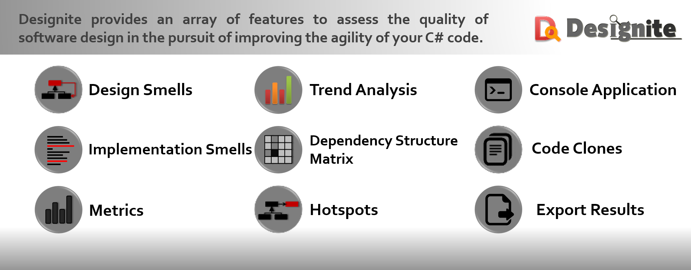
http://www.designite-tools.com
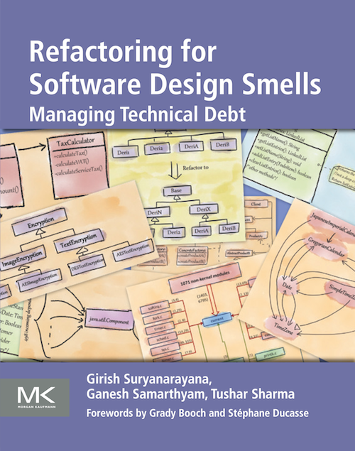
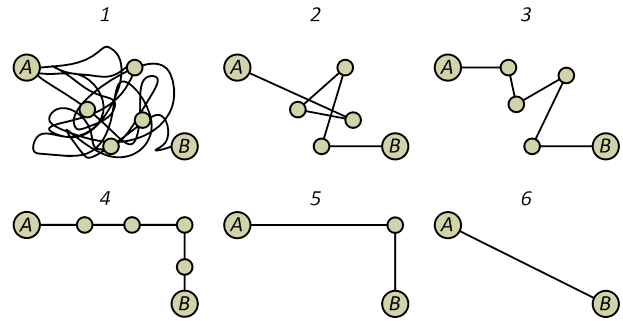
Opdyke introduced the term “Refactoring” and defined as “behavior-preserving program restructuring”
.
According to Fowler
“Refactoring is the process of changing a software system in such a way that it does not alter the external behavior of the code, yet improves its internal structure.”
Better code/design quality leads to improved productivity as well as high morale and motivation of the team
double round_type5(double n)
{
double d,d1,d2,d3;
d=n*100;
d=(int)d/100;
d1= ((d*100) - ((int)d) * 100)/100;
d1+=2.5;
d2= (((int)(d1/5))*5)/100;
d3 = (int)d +d2;
return d3;
}double roundToNearestPoint05(double number_in)
{
double roundedNo, fractionalPart, roundedFracPart, result;
roundedNo=number_in*100;
roundedNo=(int)roundedNo/100;
fractionalPart= ((roundedNo*100) - ((int)roundedNo) * 100)/100;
fractionalPart+=2.5;
roundedFracPart= (((int)(fractionalPart/5))*5)/100;
result = (int)roundedNo +roundedFracPart;
return result;
}double round_type5(double n)
{
double d,d1,d2,d3;
d=n*100;
d=(int)d/100;
d1= ((d*100) - ((int)d) * 100)/100;
d1+=2.5;
d2= (((int)(d1/5))*5)/100;
d3 = (int)d +d2;
return d3;
}void printAppObjects(cInvoice *invoiceObj, list<cItem *> itemContainer)
{
list<cItem*>::iterator itemItr = itemContainer.begin();
while(itemItr != itemContainer.end())
{
cout<<(*itemItr)->getItemName()<<endl;
cout<<(*itemItr)->getItemPrice()<<endl;
cout<<(*itemItr)->getItemTaxes()<<endl;
}
cout<<"Total items:"<<invoiceObj.getItemCount()<<endl;
cout<<"Total amount:"<<invoiceObj.getTotalAmount()<<endl;
cout<<"Total taxes:"<<invoiceObj.getTotalTaxes()<<endl;
}void printAppObjects(cInvoice *invoiceObj, list<cItem *> itemContainer){
printAllItems(itemContainer);
printInvoiceObj(invoiceObj);
}
void printAllItems(list<cItem*> itemContainer) {
list<cItem*>::iterator itemItr = itemContainer.begin();
while(itemItr != itemContainer.end()) {
cout<<(*itemItr)->getItemName()<<endl;
cout<<(*itemItr)->getItemPrice()<<endl;
cout<<(*itemItr)->getItemTaxes()<<endl;
}
}
void printInvoiceObj(cInvoice *invoiceObj){
cout<<"Total items:"<<invoiceObj.getItemCount()<<endl;
cout<<"Total amount:"<<invoiceObj.getTotalAmount()<<endl;
cout<<"Total taxes:"<<invoiceObj.getTotalTaxes()<<endl;
}if(itemObj.getAvailableUnits() > requiredUnits &&
itemObj.getExpiryDate()>date() &&
itemObj.getUnitWeight()== requiredUnitWeight)
{
…
}
else
{
…
}if(isItemSellable(…))
{
…
}
else
{
…
}
int isItemSellable(…) {
return (itemObj.getAvailableUnits() > requiredUnits
&& itemObj.getExpiryDate()>date() &&
itemObj.getUnitWeight()== requiredUnitWeight);
}switch(angle)
{
case 90:
rotateBy90(…);
break;
case 180:
rotateBy180(…);
break;
}
int rotateBy90(…)
{ …}
int rotateBy180(…)
{… }rotate(angle);
int rotate(angle, …)
{ …}It requires the knowledge of the big picture.
Comprehension woes
“Red” values of object-oriented metrics
Design principles
class GraphicsDevice {
public void setFullScreenWindow(Window w) {
if (w != null) {
if (w.getShape() != null) { w.setShape(null); }
if (w.getOpacity() < 1.0f) { w.setOpacity(1.0f); }
if (!w.isOpaque()) {
Color bgColor = w.getBackground();
bgColor = new Color(bgColor.getRed(), bgColor.getGreen(), bgColor.getBlue(), 255);
w.setBackground(bgColor);
}
}
…
}Typically employed to remove “feature envy” smell
A related refactoring is “Move field”
Compile and test
Typically carried out in groups (with fields/methods)
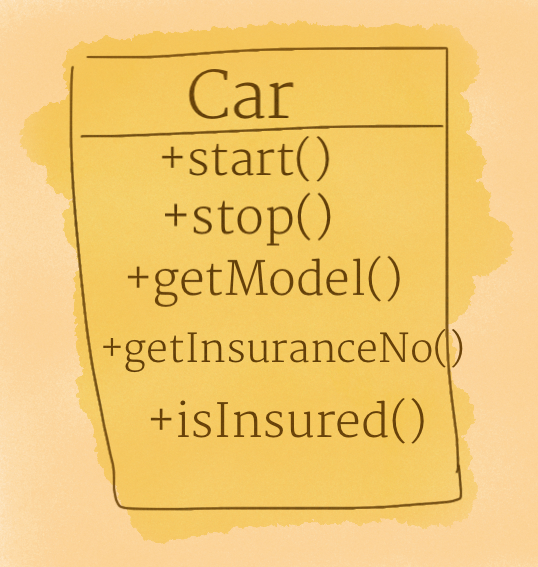
Each abstraction should have a unique responsibility.
In case, an abstraction is changed for multiple causes then it is a multifaceted abstraction (having multiple responsibilities).
Extract-class refactoring splits a multifaceted abstraction into multiple cohesive smaller abstractions.
Compile and test
It may break client’s code
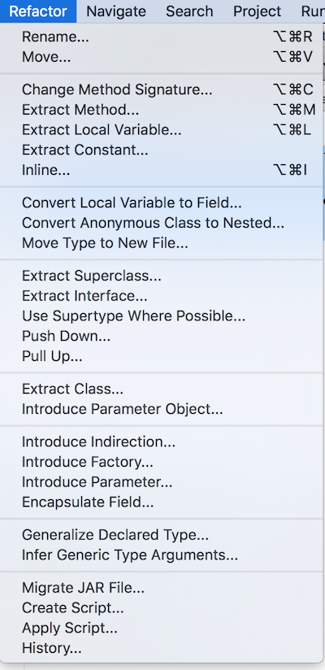
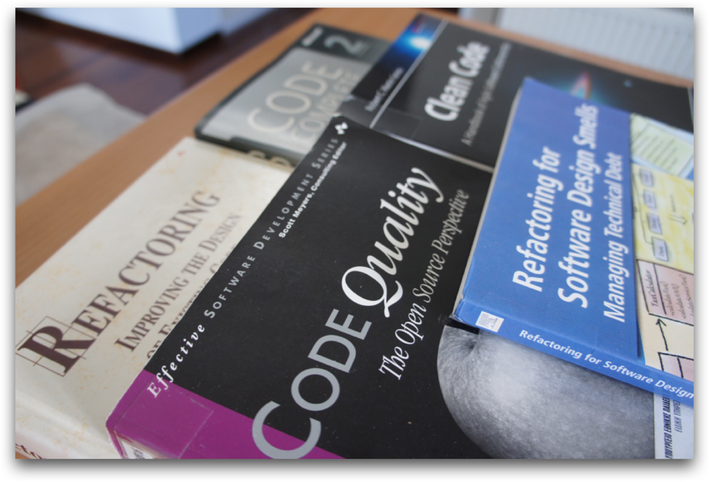